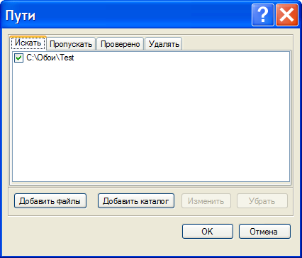
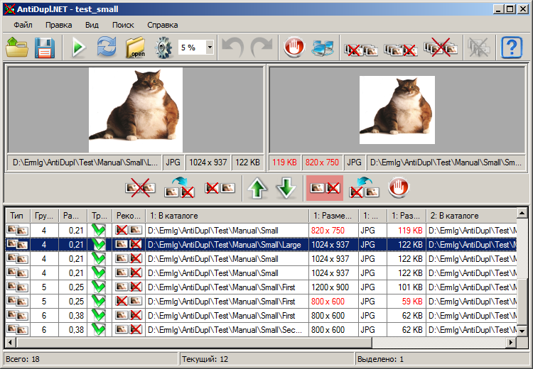

Начало работы
Данный раздел посвящен тем, кто в первый раз столкнулся с программой AntiDupl.NET. Здесь приведено краткое описание основных шагов, которые необходимо сделать пользователю для начала поиска. За подробной информацией следует обратиться по ссылкам в соответствующие разделы. Кроме того, рекомендуется заглянуть в раздел Вопросы и ответы, где находятся ответы на наиболее часто задаваемые вопросы.
Главное окно имеет вид:
Для того, чтобы начать поиск необходимо выбрать каталог, где следует проводить поиск. Для чего необходимо нажать на кнопку Пути

на главной панели инструментов, либо аналогичный пункт меню Поиск - Пути. При этом откроется окно настройки путей:
В этом окне вам на закладке Искать следует выбрать каталог с картинками, в котором необходимо провести поиск. Установленный флажок означает поиск внутри поддиреторий этой директории. После чего нужно нажать кнопку OK, вернуться в главное окно и нажать кнопку Начать поиск

на главной панели инструментов, либо пункт меню Поиск - Начать поиск. После этого начнется поиск. Его прогресс будет отображаться в окне прогресса поиска:

Его продолжительность и конечный результаты сильно зависят от настроек поиска. В большинстве случаев можно воспользоваться настройками установленными по умолчанию. По окончании поиска его результаты отобразятся в главном окне.

В правой части главного окна программы располагается таблица результатов. По данному списку можно перемещаться произвольным образом, визуально оценивать изображения в левой части окна на панели просмотра и, при необходимости, удалять, переименовывать либо перемещать. Данные операции можно проводить как над отдельными картинками, так и над несколькими сразу.
Отметим, что пользователь помимо таблицы вертикальных пар, при помощи пункта меню Вид - Режим просмотра результатов можно также выбрать таблицы горизонтальных пар:
